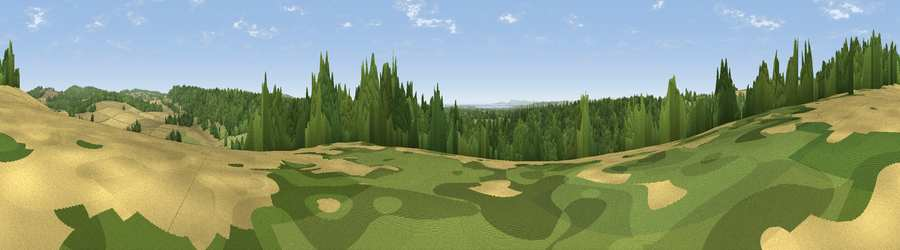

Viewpoint near Finchdean
#37735 in England · top 60% of its area beats it · near FinchdeanWhere it is
The exact computed spot (SU 73525 13825). Click the marker for map links.
The view, rendered

A 360° render of this exact spot computed from the terrain model, tree cover and land cover — summer colours, afternoon light, calibrated against photographs of famous viewpoints. Real trees, hedges and buildings will differ in detail.
The panorama
Grey silhouette: terrain skyline in each direction (720 bearings, Earth curvature and refraction included). Dashed green: skyline with trees (+15 m) and buildings (+8 m) as obstacles. Blue strip: how far the ground is visible on each bearing.
Where the view opens
Wedge length = distance to the farthest visible ground on that bearing (vegetation-aware). Rings at 10, 25 and 50 km.
What fills the view
45% woodland · 27% grassland · 25% cropland · 1% built-up · 1% water
Angular shares of the visible panorama (visual magnitude), not map area. Landscape diversity 0.51 (0–1 Shannon).
Key numbers
More beautiful places nearby
The staircase of upgrades: each row has a higher view potential than everything closer. Driving times are estimates from straight-line distance, calibrated against real road routing — check an actual route before setting out.
| Place | Direction | Drive | Score |
|---|---|---|---|
| Viewpoint near Chalton | N · 1 km | ~2 min | 31.9 |
| Viewpoint near Horndean | WNW · 2 km | ~5 min | 54.9 |
| Windmill Hill | NW · 3 km | ~7 min | 74.0 |
| Viewpoint near Buriton | NNW · 7 km | ~14 min | 80.0 |
| Beacon Hill | ENE · 9 km | ~17 min | 85.8 |
| Viewpoint near Upper Bonchurch | SSW · 38 km | ~58 min | 86.4 |
| Chanctonbury Ring | E · 40 km | ~60 min | 87.0 |
| Viewpoint near St. Lawrence | SSW · 41 km | ~61 min | 88.2 |
50.91921, -0.95539 · source: screening · position refined by local search. Computed location — check access rights before visiting.